数据来源：知识星球「南半球聊财经」星主 Jason 不跪 当日（美西时间 2026-07-07）发布的帖子。 本报告逐帖转写原文、解读图表、补充背景知识，帮助系统性地积累宏观与财经认知。
当天发帖数量：15 帖
今日要点速览
今天 Jason 的帖子清晰地分成"中国国内"与"海外"两条主线。国内线围绕一个共同底色——债务与需求偏弱：消费金融坏账正在向 40 岁中年群体集中、城投用"债拍"等隐形手段续命、二手房价继续阴跌（只有上海逆势微涨）、PPI 出现"价涨利不涨"、白酒行业从"压货"转向"真实消费"去库存，工业股则被提醒"很多利好已被提前定价"。海外线聚焦货币与地缘：日本股市暴涨反而压低日元的反直觉机制、日本财政空间与消费同步走强、美国低收入群体工资反弹削弱"K 型经济"叙事、美联储年底利率预期竟偏向"加息"、黄金进入熊市回撤逾 20%，以及伊朗—霍尔木兹的冲突升级与北约 500 亿美元军备计划。串起来看，Jason 想提示的是：在"名义数字好看、真实盈利与需求偏弱"的环境里，资产定价越来越依赖叙事与流动性，而地缘与货币的不确定性正在抬升。
帖1 · 14:04 · 消费金融坏账正在"中年化" #金融#
帖子原文
经济观察报：中年人有多难？500亿消金坏账几乎全来自他们
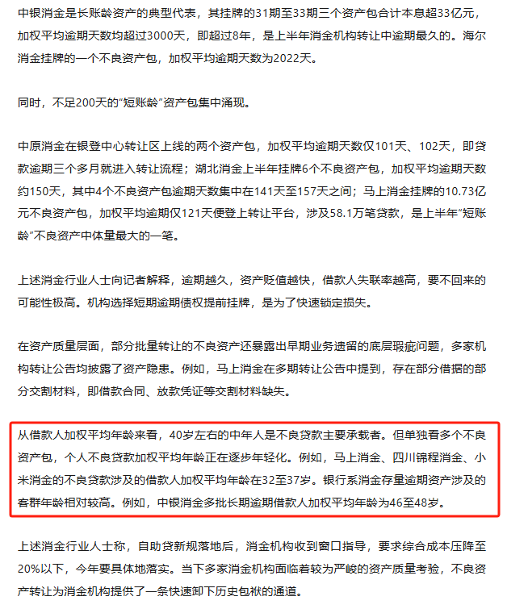
图片正文要点：中银消金挂牌的第 31–33 期资产包合计本息超 33 亿元，加权平均逾期天数均超 3000 天（即超 8 年）；同时不足 200 天的"短账龄"资产包集中涌现（如马上消金 10.73 亿元不良、涉 58.1 万笔贷款）。从借款人年龄看，40 岁左右的中年人是不良贷款主要承受者，且多个资产包借款人平均年龄正逐年轻化（马上、四川锦程、小米消金约 32–37 岁；银行系如中银消金则偏大，46–48 岁）。自助贷新规后，消金机构收到窗口指导，要求综合成本压降到 20% 以下。
一句话核心：消费金融公司正在打包甩卖坏账，而这些坏账越来越集中在中年人和年轻人身上，暴露居民端"以贷养贷"的脆弱。
背景与关键数据
"消金"即持牌消费金融公司，做的是无抵押的小额个人贷款。"不良资产包转让"是指银行/消金把收不回来的贷款打包、打折卖给资产管理公司，好处是能一次性把损失"锁定"并从报表里清出去。"加权平均逾期天数 3000 天"意味着这些债已经烂了 8 年基本没指望，只能贱卖；而"短账龄"（逾期才一两百天就急着挂牌）说明机构对新发生的坏账也开始快速止损——这通常是坏账生成速度加快的信号。
图片解读
这是一张纯文字的报道截图，核心数字是两组：一是逾期天数（老账 3000+ 天 vs 新账 100–150 天并存），二是借款人年龄（主力 40 岁、部分机构客群下探到 32–37 岁）。红框标出的正是"年龄"这条线索——坏账正在向本该是收入顶梁柱的中年人蔓延。
为什么重要 / 对市场和经济的含义
中年人往往上有老下有小、房贷车贷压身，他们成为坏账主力，说明居民资产负债表的压力已经从"边缘人群"传导到"中坚人群"。这对消费复苏是负面信号，也解释了为什么监管要压降贷款综合成本（降低居民偿债负担）。对银行、消金、AMC（资产管理公司）板块是持续的资产质量压力。
延伸知识
"以贷养贷"与债务螺旋：当一个人用新借的钱去还旧债，短期内不会违约，但债务总额和利息滚雪球，一旦收入中断就集中爆雷。宏观上这叫"庞氏融资"（Hyman Minsky 金融不稳定假说中最脆弱的一档）——经济体里靠借新还旧维持的比例越高，系统越接近"明斯基时刻"。今天这条消金新闻和后面帖3 的城投"债拍"，本质是同一逻辑在居民端和政府端的两个投影。
帖2 · 14:10 · 餐饮"去全职化"，灵活用工成刚需 #经济数据#
帖子原文
红餐网：随着社保新规落地执行，企业用工合规要求也越来越严，餐饮老板肩上的成本负担直接翻倍……灵活用工正好能够解决这些痛点，平日门店只配基础全职员工，高峰时段招临时工补位，客流回落就结束用工，按工时付费即可。
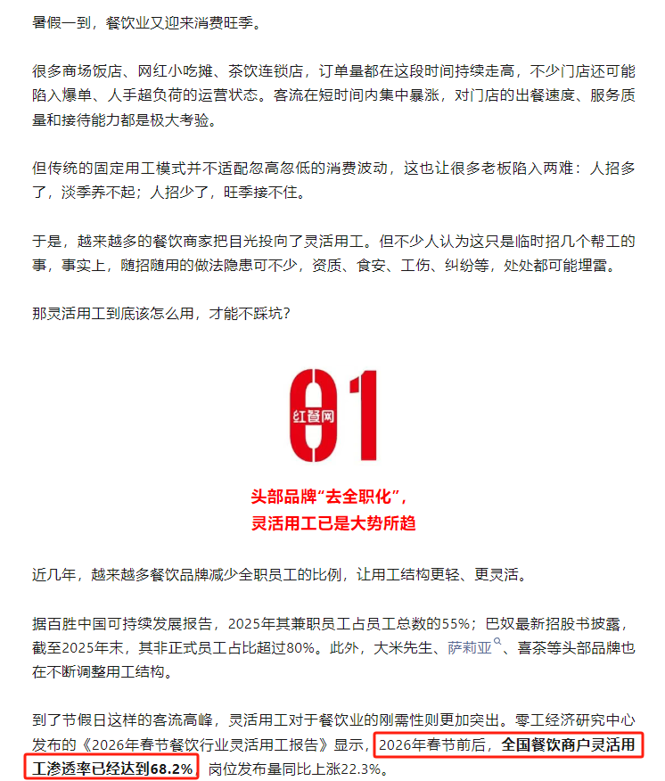
图片正文要点：头部品牌"去全职化"已是大势——巴奴非正式员工占比超 80%，2025 年兼职员工占员工总数 55%；2026 年春节前后，全国餐饮商户灵活用工渗透率已达 68.2%，岗位发布量同比上涨 22.3%。
一句话核心：社保新规抬高了雇全职员工的固定成本，餐饮业大规模转向"用一次付一次"的临时工。
背景与关键数据
"社保新规"指强制为全职员工足额缴纳社保（养老、医疗等），这让每个全职岗位的真实成本比工资本身高出一大截。餐饮业客流忽高忽低、利润薄，固定成本一涨就吃不消，于是转向"灵活用工"（按小时结算的临时工，企业不承担长期社保）。渗透率 68.2% 意味着三分之二的餐饮商户已经在用这种模式。
图片解读
图片是红餐网的图文报道，红框标注了两个关键数字：头部品牌非正式员工占比 80%+，以及行业灵活用工渗透率 68.2%。它传达的信号是——这不是个别现象，而是全行业的用工结构性转变。
为什么重要 / 对市场和经济的含义
一方面，这是企业在需求不确定、成本上升下的理性自保；另一方面，对劳动者意味着更少的社保覆盖和更不稳定的收入，会反过来抑制消费意愿。"社保刚性成本 → 企业去全职化 → 居民收入不稳 → 消费更弱"，这是理解当前内需偏弱的一条微观链条。它和帖1 的居民债务压力互为印证。
延伸知识
"零工经济"（gig economy）：平台化、按需结算的用工模式，好处是灵活、坏处是把风险从企业转移给个人。发达经济体（如美国的 Uber 司机、外卖骑手）也走过这条路，随之而来的是"劳动收入份额下降"——即国民收入里发给打工人的比例变少、发给资本的变多，长期看会加剧贫富分化和消费疲软。
帖3 · 14:14 · 城投"债拍"：隐形融资的新变种 #TAX#
帖子原文
信堡：债拍创新
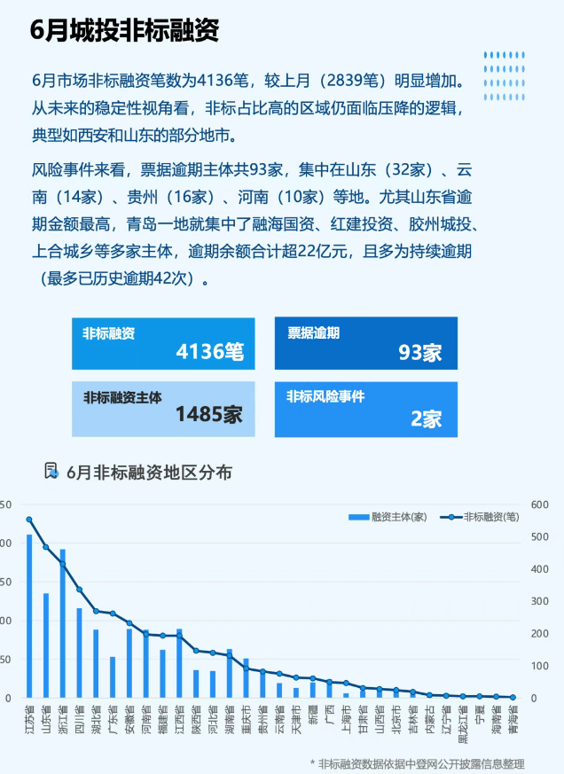
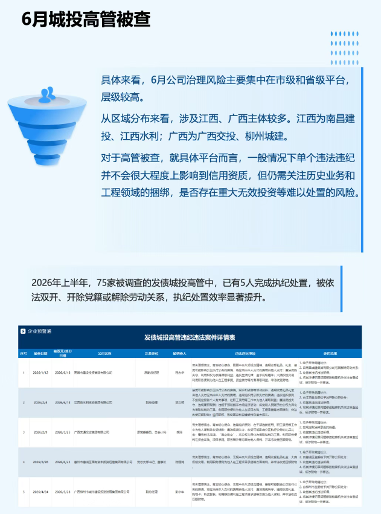
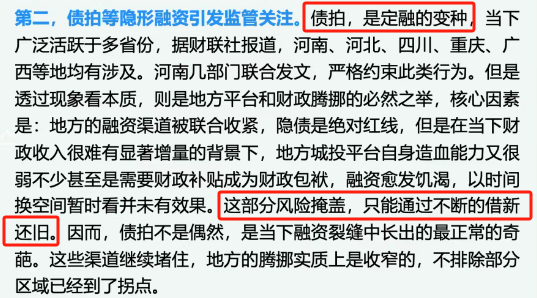
图片要点：
- 图1（6月城投非标融资）：6 月非标融资 4136 笔，较上月 2839 笔明显增加；非标融资主体 1485 家；票据逾期 93 家，集中在山东（32）、贵州（16）、云南（14）、河南（10）。地区分布柱状图显示江苏、山东、浙江居前。
- 图2（6月城投高管被查）：治理风险集中在市级、省级平台；2026 上半年 75 家被调查的发债城投高管中已有 5 人被"双开"。
- 图3（债拍等隐形融资引发监管关注）：明确"债拍是定融的变种"，广泛活跃于河南、河北、四川、重庆、广西等地；本质是地方融资渠道被联合收紧后，城投"自身造血能力弱、又需财政补贴，融资愈发饥渴，以时间换空间但并未有效果"，"只能通过不断借新还旧"。
一句话核心：地方城投在正规融资被卡死后，用"债拍"这种打擦边球的新方式继续借钱，本质是借新还旧、拖延风险。
背景与关键数据
"城投"是地方政府融资平台公司，历史上替地方政府举债搞基建。"非标融资"指不通过公开债券市场、而是通过信托、定融（定向融资计划）等不透明渠道借钱，利率高、风险大。"债拍"是最新的变种——图3 直接点破它"是定融的变种"。6 月非标笔数从 2839 猛增到 4136，说明正规渠道越堵、城投越往灰色地带挤。票据逾期 93 家、地区高度集中（山东、云贵川），是尾部风险在暴露。
图片解读
三张图是一套完整叙事：图1 用数据说"隐形融资在放量、且集中在特定省份"；图2 说"监管在抓人（高管被查、双开）"；图3 用文字点破机制——"渠道被堵 → 造血能力弱 → 只能借新还旧 → 债拍应运而生"。柱状图里江苏、山东、浙江体量最大，但真正的风险点是逾期集中的山东和西南省份。
为什么重要 / 对市场和经济的含义
这是"化债"大背景下的猫鼠游戏：中央要压隐性债务，地方在财政收入难增的情况下又离不开借钱，于是不断创新出新的融资马甲。对债券市场意味着城投信用分化会加剧——强区域（江浙）尚可，弱区域（云贵）尾部违约风险上升。对宏观意味着地方政府的"腾挪空间"在收窄，可能拖累基建投资。
延伸知识
"借新还旧"与"债务展期"：只要能不断借到新钱还旧债，违约就不会发生，但债务本金一直在，风险只是被推迟。这与帖1 居民端的"以贷养贷"是同构的。理解中国债务问题的关键，是区分"存量债务"（能否展期、成本能否降低）和"新增造血"（有没有真实现金流来还本）——债拍这类工具解决的是前者，回避的是后者。
帖4 · 14:16 · 6月二手房价：全国续跌，上海逆势连涨 #房价#
帖子原文
中指院：6月，百城二手住宅均价环比下跌0.42%，同比下跌7.68%；十大城市二手住宅均价环比下跌0.25%，同比下跌7.52%。其中上海二手住宅价格连续四个月上涨，6月上涨0.10%
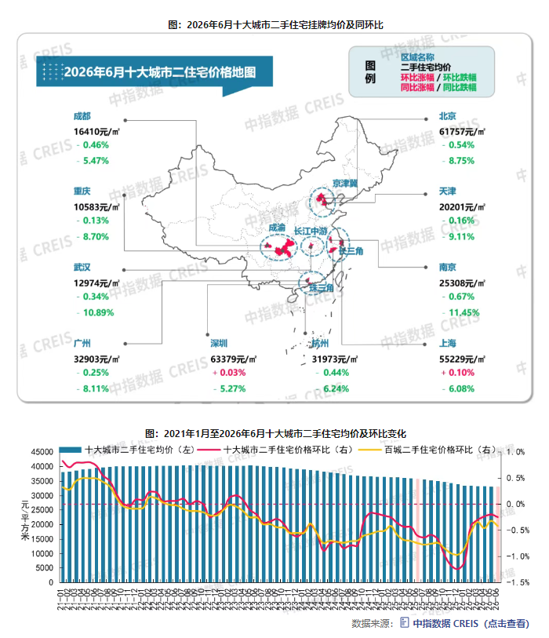
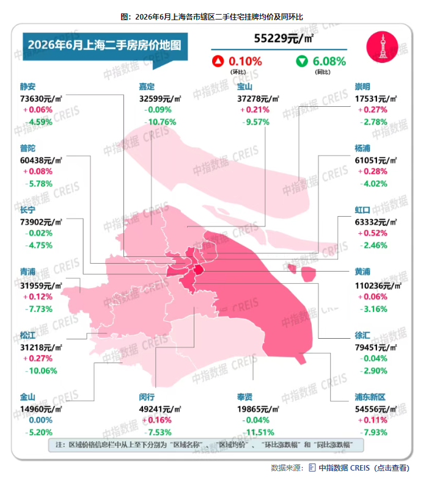
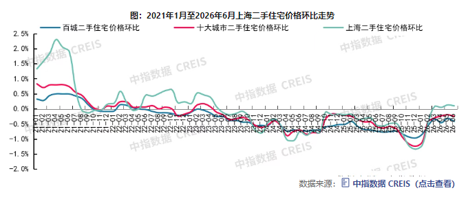
图片要点：
- 图1（十大城市价格地图+走势）：各城市 6 月二手挂牌均价与环比/同比。北京 61757 元/㎡（环比 -0.54%、同比 -8.75%）、深圳 63379（环比 +0.03%、同比 -5.27%）、上海 55229（环比 +0.10%、同比 -6.08%）、成都 16410、重庆 10583（同比 -8.70%）等。下方长条图显示 2021 年以来十大城市均价与环比长期下行。
- 图2（上海各区地图）：上海整体环比 +0.10%、同比 -6.08%。黄浦最贵 110236 元/㎡，静安 73630、长宁 73902；多数区环比微涨、同比仍跌。
- 图3（上海环比走势）：上海二手价格环比近几个月已由负转正、明显强于百城和十大城市。
一句话核心：全国二手房价还在阴跌（同比 -7.68%），但上海已连涨四个月，一线内部严重分化。
背景与关键数据
"环比"是和上个月比、看短期动能；"同比"是和去年同期比、看趋势。全国百城同比 -7.68% 说明过去一年房价整体下了一个台阶；但上海环比 +0.10%（连涨四个月）说明最核心城市的成交在企稳回暖。深圳环比 +0.03% 也刚转正。这是典型的"核心资产先止跌、外围继续下行"的格局。
图片解读
图1 的中国地图直观展示"全国普跌"：几乎所有城市同比都是绿色（下跌），重庆、南京同比跌幅超 9%、11%。图2 放大到上海内部：黄浦、虹口、宝山等环比翻红，但郊区（嘉定 -10.76%、松江 -10.06% 同比）仍深跌，说明连上海内部也是"中心强、郊区弱"。图3 的折线最关键——上海（绿线）已经翘头向上，和还在零轴下方的全国均值拉开差距。
为什么重要 / 对市场和经济的含义
房地产是中国居民最大的资产，房价走势直接影响财富效应和消费信心。上海企稳是一个积极的边际信号（核心城市往往领先），但"一枝独秀"也说明资金和购买力在向极少数核心资产集中，广大三四线仍在去库存。对政策含义是：托底政策的效果目前只在最核心城市显现，普遍性的复苏还没到来。
延伸知识
"挂牌价"vs"成交价"：地图上的多是挂牌价（卖家报价），通常高于真实成交价，且在下行市场里挂牌价往往比成交价更"抗跌"（卖家不愿降价、宁可挂着）。所以看房价拐点，成交量的回升往往比价格更早、更真实。这也是为什么帖5 要专门看"挂牌价指数"和"租金"来交叉验证。
帖5 · 14:18 · 挂牌价续跌、租金环比转涨 #房价#
帖子原文
国信达：6月份，全国二手房挂牌价指数环比下降0.29%。一、二、三、四线城市均环比下降，降幅分别为0.07%、0.32%、0.51%、0.31%。6月份，全国住宅出租挂牌价指数环比上涨0.39%，同比下降2.42%
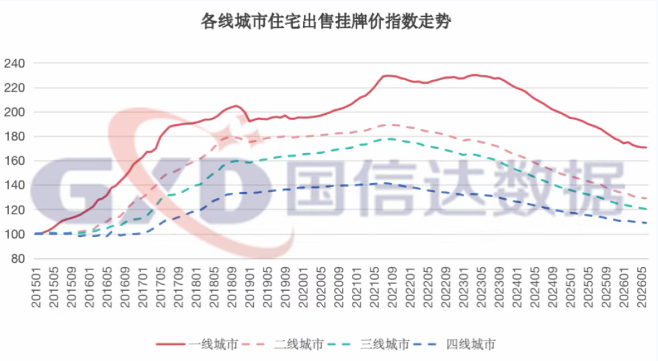
图片要点：各线城市住宅出售挂牌价指数走势（2015–2026）。一线城市（红线）2021 年见顶约 230 后持续下行至约 170；二、三、四线依次在更低位置见顶回落，目前都在下行通道中，四线城市指数最平、绝对水平最低。
一句话核心：卖房挂牌价还在跌（尤以三线跌得最狠 -0.51%），但租金环比开始涨，租售两端出现微妙背离。
背景与关键数据
"挂牌价指数"追踪卖家报价的整体水平，是房价的"领先温度计"。六月一到四线全部环比下降，且三线跌幅最大（-0.51%），印证了帖4"核心强、外围弱"。但同一时间"出租挂牌价"环比 +0.39% 转涨——买卖市场冷、租赁市场略暖，说明部分需求从"买"转向"租"。
图片解读
这张折线图的关键是四条线的"见顶时间和高度"依次递减：一线（红）冲到最高、最晚见顶（2021），四线（蓝虚线）最早走平、绝对水平最低。红线从 230 一路滑到 170，说明连最强的一线挂牌价也累计跌了约 25%。所有线目前都朝下，没有一条重新翘头——和帖4 里上海成交价的企稳形成对照，说明"挂牌价"比"成交价"反应更慢。
为什么重要 / 对市场和经济的含义
租金环比转涨、售价续跌，会推高"租金回报率"（租金/房价），当这个比值回升到接近或超过存款/理财利率时，往往是房产投资价值重新出现的信号，也常常是市场筑底的前兆之一。但目前售价跌得比租金涨得多，说明还在"磨底"阶段。
延伸知识
"租售比"（Price-to-Rent Ratio）：房价 ÷ 年租金，是判断房产是否高估的经典指标。中国大城市过去这个比值极高（意味着靠租金要几十年才回本），泡沫特征明显。房价跌 + 租金涨会让租售比回归合理，这是市场"去泡沫"的健康方向，虽然过程对持有者是痛苦的。
帖6 · 14:21 · PPI"价涨利不涨"，全年中枢 1.8–2.2% #经济数据#
帖子原文
财通：PPI与企业盈利并非简单的同涨同跌关系。输入性通胀环境中，上游资源品行业盈利相对受益……但对中下游行业来说，成本沿产业链传导存在明显损耗，上游涨价难以完全向下转嫁。尤其在内需偏弱背景下，中下游企业只能压缩自身利润对冲原材料成本，最终形成PPI上行但盈利修复乏力的"价涨利不涨"格局。综合判断，国际油价或在4月已触及年内高点，全年运行于75-85美元/桶区间，全年国内PPI同比中枢或运行于1.8%–2.2%，峰值大概率出现在年中，拉长至2027年PPI下行压力将加大。
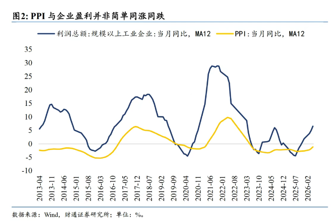
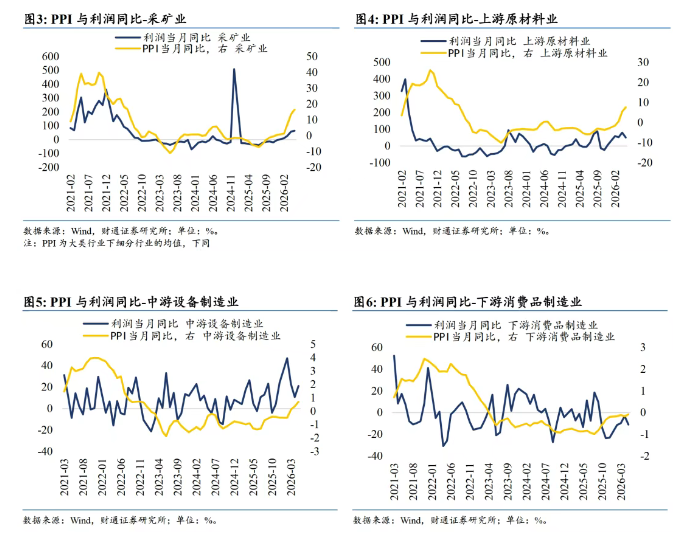
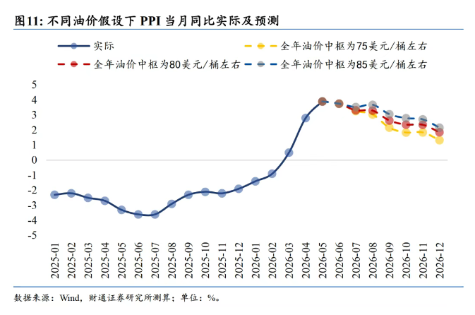
图片要点：
- 图1（PPI vs 规模以上工业企业利润，MA12）：两条线长期同向但不完全同步；2021 年利润随 PPI 冲高到近 30%，之后双双回落，2025 年底利润一度转负、2026 年初开始回升，PPI 仍在零轴附近偏弱。
- 图2（分行业 PPI 与利润，采矿/上游原材料/中游设备/下游消费品）：上游（采矿、原材料）PPI 与利润相关性高、弹性大；中下游（设备、消费品）两者关系更弱，验证"传导有损耗"。
- 图3（不同油价假设下 PPI 预测）：实际 PPI 2026 年中约 +4% 见顶；此后按油价 75/80/85 美元三档情景，PPI 同比都逐月回落，到年底落到约 1.5%–2.3%。
一句话核心：即使工业品价格（PPI）在涨，企业利润也未必跟着涨，因为中下游根本涨不动价；预计 PPI 年中见顶后回落。
背景与关键数据
PPI（生产者价格指数）衡量工业品出厂价。直觉上"东西涨价、企业赚更多"，但 Jason 引用的财通观点戳破了这个直觉：原材料涨价时，上游（挖矿、炼油）确实受益，但中下游企业（做设备、做消费品的）在内需弱、不敢涨价的情况下，只能自己吞下成本、压缩利润，于是出现"价涨利不涨"。全年 PPI 中枢 1.8–2.2%、年中见顶，是一个"温和通胀但不持续"的判断。
图片解读
图1 最能说明问题：蓝线（利润增速）和黄线（PPI）大方向一致，但幅度和拐点并不齐步——2021 年利润暴涨远超 PPI（上游赚翻），2025 年利润却一度跌到零轴以下而 PPI 还在零附近，说明"价格"与"盈利"脱钩。图2 的四小图是分行业拆解，上游两图（采矿、原材料）里蓝黄两线咬合紧密，中下游两图则松散——直观证明"越往产业链下游，涨价越传导不动"。图3 是预测图，三条虚线（不同油价）都在 2026 年中后掉头向下，指向"下半年 PPI 走弱"。
为什么重要 / 对市场和经济的含义
对股市：这解释了为什么大宗涨价时，反而要买上游资源股（真受益）而非中下游制造股（被夹在中间）。对宏观：PPI 靠 2025 年低基数撑起来的同比"翘尾"是暂时的，2027 年会面临高基数压力，意味着工业品通胀不可持续，实体盈利改善的基础不牢。
延伸知识
"基数效应"（翘尾）：同比数据 = 今年 ÷ 去年。如果去年特别低（低基数），今年哪怕环比没怎么涨，同比也会显得很高；反之去年高，今年同比就被压低。所以看同比数据要警惕"是真的改善，还是只是去年太差"。财通说 2026 年 PPI 修复靠的是 2025 低基数红利，2027 就会反噬——这就是基数效应的典型表现。
帖7 · 14:28 · 白酒股东大会：从"压货"转向"真实消费" #经济数据#
帖子原文
高盛：6月至7月初，中国主要白酒公司陆续召开股东大会。会议核心主题、战略重点已明显从过去的 sell-in driven growth（向渠道压货推动增长），转向 consumer-led, high-quality growth（以消费者真实需求为核心的高质量增长）。但行业去库存仍需要时间，仍是白酒品牌和渠道的核心任务。
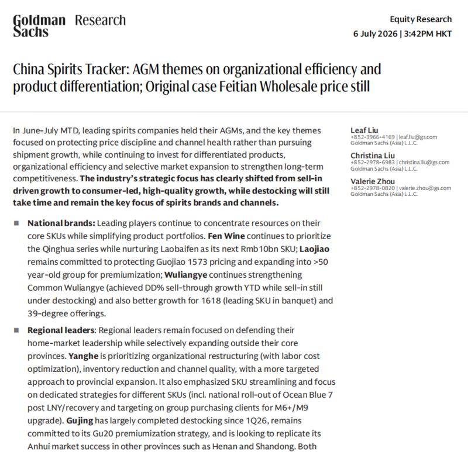
图片要点：高盛研报（2026年7月6日）"China Spirits Tracker"。核心结论：龙头酒企 AGM（股东大会）主题从"压货增长"转向"消费者驱动的高质量增长"、保护价格纪律与渠道健康；汾酒聚焦青花系列、老白汾为下一个百亿级 SKU；泸州老窖守护国窖 1573 价格；五粮液普五 YTD 动销双位数增长但仍在去库存；区域龙头（洋河、古井）聚焦组织重构和降库存。
一句话核心：白酒行业集体承认"往经销商仓库塞货"的老套路走不通了，转向真实动销，但清库存还要熬一段时间。
背景与关键数据
"sell-in"（压货）是酒企把货卖给经销商就算收入，哪怕终端没卖出去；"sell-through / 动销"才是消费者真正买走。过去白酒靠不断压货做出漂亮的营收增长，代价是渠道库存越积越高、价格倒挂（批价低于出厂价）。现在龙头集体转向"consumer-led"，等于承认前几年的增长有水分，现在要挤库存、保价格。
图片解读
这是高盛英文研报首页，没有图表，重点在加粗结论句——"行业战略重心已明确从 sell-in 驱动转向 consumer-led 高质量增长，而去库存仍需时间"。研报逐一点评了汾酒、泸州老窖、五粮液、洋河、古井的具体动作，共同关键词是"控货、保价、去库存"。
为什么重要 / 对市场和经济的含义
白酒是观察中国消费景气和"面子经济"的晴雨表。行业主动去库存、保价格，短期会牺牲报表增速，但有利于长期健康。对投资者意味着：白酒板块的逻辑从"看营收增长"切换到"看批价企稳和真实动销"，短期业绩承压、估值需要重新锚定。这与帖8 摩根斯坦利"很多利好已被提前定价"的谨慎是一致的。
延伸知识
"渠道库存周期"：消费品行业普遍存在"补库存—去库存"循环。当终端需求转弱，渠道里堆积的存货会反过来压制上游的出货和价格，形成"越卖越亏、越亏越要清"的负反馈，直到库存出清才能重新健康增长。判断白酒（乃至任何消费品）拐点，看的不是出厂价，而是终端批价和库存天数。
帖8 · 14:34 · 工业子行业周期定位：别"看好就买" #A股#
帖子原文
摩根斯坦利：我们把不同子行业放在周期曲线上：光伏设备接近底部区域；自动化/机器人/激光处于上行周期早期；AIDC设备、检测设备、低压电器、重卡、工程机械处在上行周期中段；铁路设备接近周期高点。大部分工业品细分板块当前PE已高于过去五年平均水平，这意味着下半年工业股不能简单"看好就买"，因为不少主题已被市场提前定价。
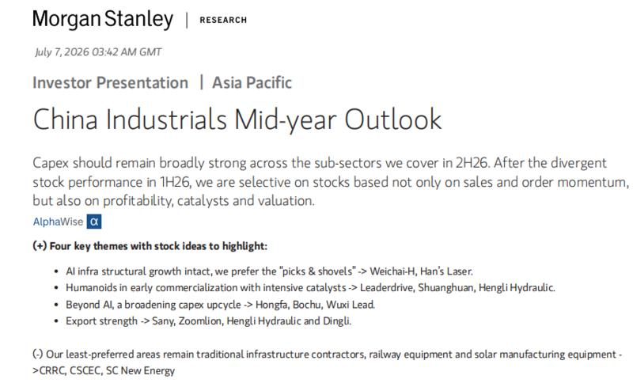
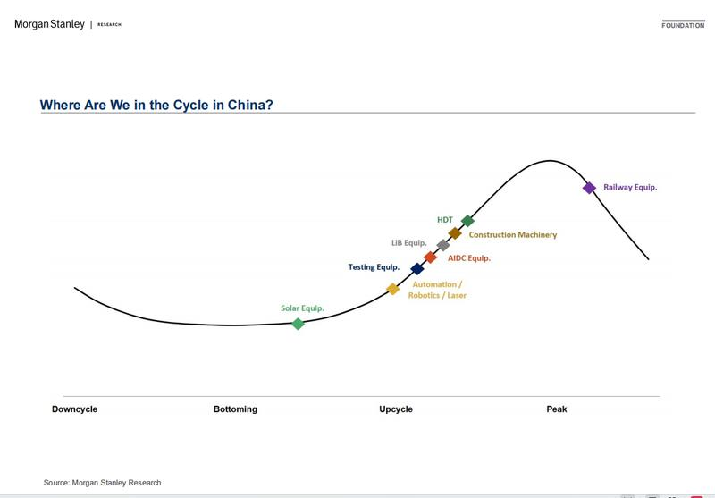
图片要点：
- 图1（研报首页）："China Industrials Mid-year Outlook"。四大主题：AI 基础设施（偏好"卖铲人"潍柴、大族激光）；人形机器人早期商业化（绿的谐波、双环、恒立液压）；AI 之外更广的资本开支上行（宏发、博众、无锡振华）；出口强势（三一、中联、恒立、鼎力）。最不看好：传统基建承包商、铁路设备、光伏制造设备（中国中车、中国建筑、SC New Energy）。
- 图2（周期曲线定位图）：一条"U 形→上行→见顶"的周期曲线，从左到右标注各子行业位置——光伏设备（Bottoming 底部）、自动化/机器人/激光（Upcycle 早期）、检测设备/AIDC/低压电器（上行中段）、重卡/工程机械（中段偏上）、铁路设备（接近 Peak 顶部）。
一句话核心：不同工业子行业处在周期的不同位置，且大多估值已经不便宜，所以下半年要挑"位置早、还没被炒"的，而不是无脑追。
背景与关键数据
"周期曲线"把行业景气想象成一个从谷底（Bottoming）→复苏上行（Upcycle）→见顶（Peak）→下行（Downcycle）的循环。摩根斯坦利把每个工业子行业钉在这条曲线上：越靠左（如光伏设备在底部、机器人在上行早期）越有向上空间；越靠右（铁路设备接近顶部）越要小心。同时点出"PE（市盈率）已高于五年均值"——即很多板块估值已经透支了未来的好消息。
图片解读
图2 是这条帖子的精华：它是一张示意性的正弦波曲线，横轴是周期阶段（Downcycle→Bottoming→Upcycle→Peak），各子行业以彩色菱形标在曲线上。光伏设备孤零零在左侧谷底（最有反转潜力但也最煎熬），机器人/激光刚爬出底部（上行早期、性价比高），而铁路设备已经在右侧接近山顶（继续上涨空间有限）。这张图本质是一张"买入优先级地图"。
为什么重要 / 对市场和经济的含义
它提醒投资者：牛市后期最大的风险不是"看错行业"，而是"看对了但买贵了"。当大部分板块 PE 已高于历史均值，超额收益只能来自"周期位置早、市场还没充分定价"的细分领域（机器人、自动化、AI 基础设施的"卖铲人"）。这与帖7 白酒"估值需重锚"、帖12"黄金靠叙事"共同构成一个主题——2026 下半年，定价已经很满，选择比方向更重要。
延伸知识
"卖铲人"逻辑（picks & shovels）：淘金热里最稳赚的往往不是淘金者，而是卖铲子、卖牛仔裤的人。放到 AI 时代，就是不去赌哪个大模型胜出，而是买给所有玩家供货的上游（算力、设备、激光、散热）。摩根斯坦利在 AI 主题里明确偏好"卖铲人"，就是这个思路——赚确定性的钱，不赌方向。
帖9 · 14:39 · 反直觉：日股越涨，日元越跌 #金融#
帖子原文
花旗：日本股市暴涨本身，会制造日元卖压。海外投资者买日本股票，本应带来日元买盘（2025年以来净增超20万亿日元，若80%不对冲，约带来15万亿日元买盘）。但问题在于日本股市涨得太快——市值已近1400万亿日元，过去一年增加约400万亿，其中约三成由海外投资者持有。假设海外持仓中20%是"汇率中性策略"，那么单纯因股市市值上涨，这一年就新增约25万亿日元的卖日元对冲需求。结果：买盘15万亿被卖盘25万亿压过去，这就是"日股涨、日元反而跌"的核心机制。我们股票团队预测日经年内可能达9万点，若实现，美元/日元仍面临上行压力（日元仍有贬值压力）。
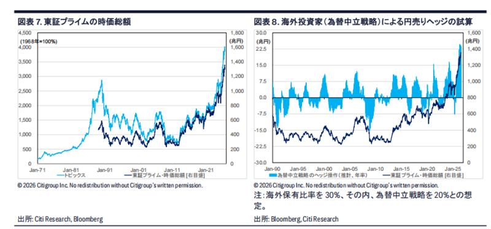
图片要点：两张花旗图。左图"东证 Prime 市值"（1968=100%）显示日本股市市值创历史新高、近年陡峭上冲。右图"海外投资者（汇率中性策略）的卖日元对冲试算"，蓝色柱代表估算的对冲卖压，2025 年后急剧放大、冲上历史高位；注解假设海外持有比率 30%、其中汇率中性策略占 20%。
一句话核心：外资买日股本该推升日元，但因为股市市值涨太猛，外资为锁定汇率风险而卖出的日元规模更大，反而把日元压低。
背景与关键数据
这是一个精妙的资金流机制。外国人买日股要先把美元换成日元（买日元）。但很多机构会做"汇率对冲"——既持有日股，又卖出等值日元（避免日元贬值吃掉股票收益）。当日股市值暴涨，他们持有的日股价值变大，需要对冲的日元敞口也同步变大，于是要"追加卖出日元"。花旗算了一笔账：新增买盘约 15 万亿，但新增对冲卖盘约 25 万亿，净效果是卖压更大——日元因此走弱。
图片解读
左图（东证市值创新高）交代前提：日股确实涨到了历史级别的高位，市值曲线近乎垂直上冲。右图是核心论据——它把"因股市上涨而被动产生的对冲卖日元需求"量化出来，蓝柱在 2025 年后飙到历史峰值，直观说明"股市越涨、对冲卖压越大"。两图合起来完成论证：市值膨胀（左）→ 对冲卖压激增（右）→ 日元承压。
为什么重要 / 对市场和经济的含义
它打破了"股市涨、货币强"的直觉，揭示了资金流里"对冲行为"这个隐藏变量。对交易者：如果看好日股（花旗预测日经 9 万点），逻辑上应同时预期日元继续贬值、美元/日元上行——这是一个"日股多头 + 日元空头"的组合思路。对宏观：日元弱会输出通缩、影响亚洲出口竞争格局，也和帖14 日本财政/消费走强的图景交织。
延伸知识
"汇率对冲"（currency hedging）与套息交易：跨境投资者常把"资产选择"和"货币选择"分开管理——我要日本股票的上涨，但不想承担日元的波动，就用外汇远期卖出日元来对冲。这类"汇率中性"资金的规模变化，本身就能驱动汇率，是外汇市场里散户看不到但极重要的力量。它也是"日元套息交易"（借便宜的日元去买高息资产）的一体两面。
帖10 · 14:43 · "所有人承担损失" 🕯️
帖子原文
依稀记得高博那句：所有人承担损失。 🕯️
（本帖无图片）
一句话核心：一句带着蜡烛表情的感慨，像是对当天所有帖子的注脚——风险最终会由所有人共同买单。
背景与解读
这是 Jason 当天唯一一条纯观点、情绪性的短帖。"高博"应指其引用的某位人物，"所有人承担损失"是一句对系统性风险的概括——当债务、泡沫、地缘风险积累到一定程度，最终的代价不会只落在某一群人头上，而是通过通胀、税收、资产缩水等方式由全社会共同承担。蜡烛 🕯️ 常用于哀悼或"默哀/祭奠"语境。
为什么重要
放在当天的语境里，前面几帖讲的消金坏账、城投债拍、房价下跌、PPI 价涨利不涨、黄金熊市，本质都是"损失在某处累积、终将有人买单"。这条短帖是 Jason 的情绪落点，提醒读者：宏观叙事再复杂，最终都会传导到普通人的资产负债表上。
延伸知识
"社会化损失"（socialized losses）：金融危机中常见的现象——收益私有化、损失社会化。比如银行冒险赚钱归自己，出了系统性风险却要政府用纳税人的钱兜底（救助）。理解这个概念，有助于看懂为什么"化债""救房市""兜底存款"这类政策，本质都是把局部风险摊薄到全体纳税人和货币持有者身上。
帖11 · 14:57 · 伊朗—霍尔木兹冲突升级，俄油跌回战前 #金融#
帖子原文
zerohedge：美国中央司令部宣布，针对伊朗对三艘通过霍尔木兹海峡的商船的袭击，部队已开始发动一系列强力打击。俄罗斯原油价格已回落至中东战争前的水平，其旗舰乌拉尔原油在七月前三天平均每桶仅41.66美元。
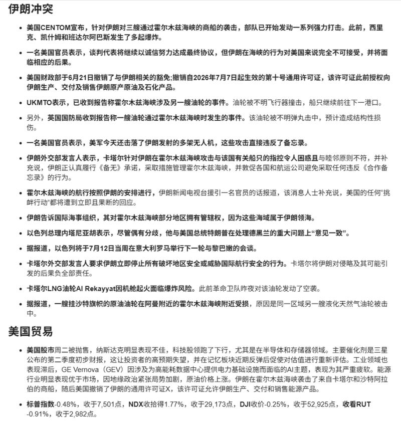
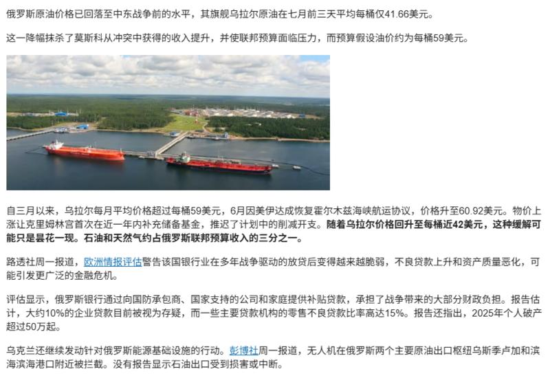
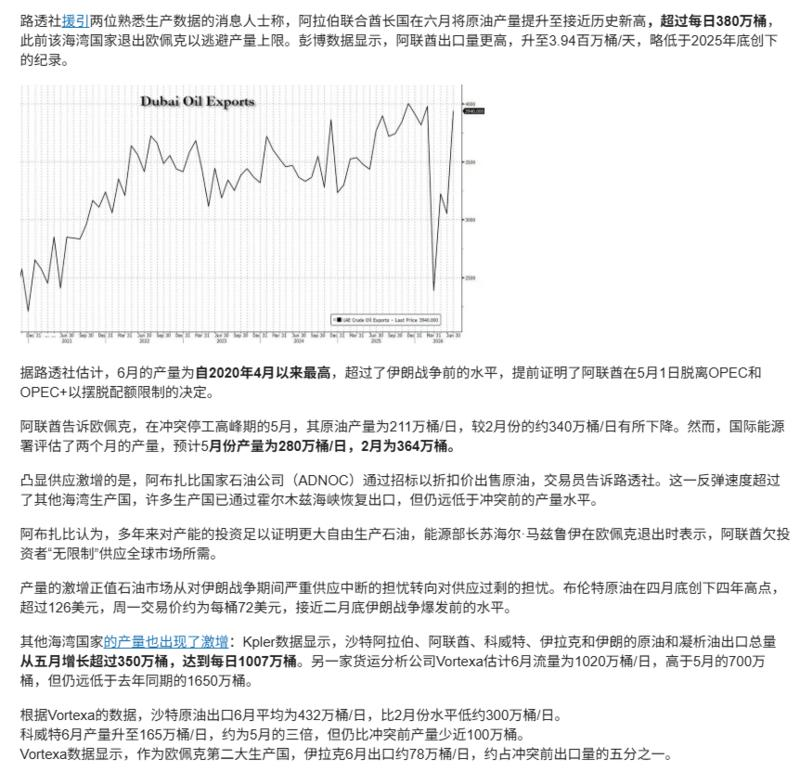
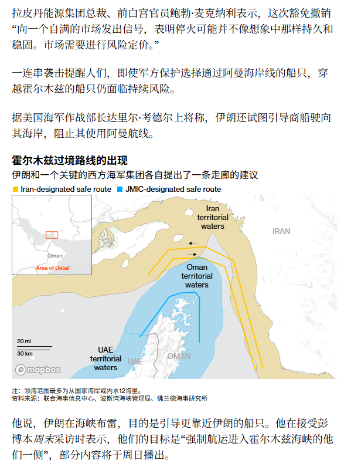
图片要点：
- 图1（伊朗冲突要闻）：美军对伊朗发动打击；美财政部撤销与伊朗相关豁免（自 2026/7/7 生效）；多艘油轮在霍尔木兹遇袭/受损；美军无人机被击落；卡塔尔一艘 LNG 油轮因机舱起火面临爆炸风险。美股当日：标普 -0.48% 收 7501、纳指 +1.77% 收 29173、道指 -0.25%、罗素 -0.91%。
- 图2（油轮照片+俄银行）：乌拉尔原油七月前三天均价仅 41.66 美元，抹杀了俄罗斯从冲突中获得的收入提升，联邦预算承压（预算假设油价约 59 美元）。欧洲情报评估警告俄银行业在多年战争放贷后脆弱、不良上升，2025 年个人破产超 50 万起。
- 图3（迪拜/阿联酋原油出口）：阿联酋 6 月原油产量升至近历史新高、超每日 380 万桶（退出 OPEC 逃避配额）；"Dubai Oil Exports"曲线冲向历史高位。海湾国家产量集体激增，供应担忧从"中断"转向"过剩"。
- 图4（北约500亿+霍尔木兹路线图）：英法德发起 500 亿美元 NATO 远程武器计划；下方"霍尔木兹过境路线图"显示伊朗指定安全航线（黄）与西方海军集团 JMIC 指定航线（蓝）在阿曼、UAE 领海的分歧。
一句话核心：中东火药桶再度点燃（美军打击伊朗、霍尔木兹航运受威胁），但因海湾国家增产，油价不涨反跌，俄罗斯石油收入被打回战前。
背景与关键数据
霍尔木兹海峡是全球约五分之一石油海运的咽喉。伊朗袭击商船、美军回击，本该引发油价飙升的"战争溢价"。但吊诡的是——阿联酋、沙特等海湾国家同时大幅增产（阿联酋超 380 万桶/日、逼近历史新高），供应过剩压过了地缘风险，导致油价反而走弱，连俄罗斯乌拉尔原油都跌到 41.66 美元（远低于俄预算假设的 59 美元）。
图片解读
四张图讲一个"冲突升级但油价反跌"的反常故事。图1 罗列冲突事件密度之高（打击、油轮遇袭、无人机被击落）本应利多油价；图3 的迪拜原油出口曲线冲上历史高位，正是压制油价的关键——供应太多。图4 的航线图把冲突"空间化"：伊朗和西方各划各的"安全航线"，说明海峡通行权已成博弈焦点。图2 的油轮照片和俄银行分析则点出受害者——低油价掐住了俄罗斯的财政咽喉。
为什么重要 / 对市场和经济的含义
这是一个教科书级的"基本面 vs 地缘"对决：地缘风险想推高油价，但 OPEC+ 瓦解、海湾增产的基本面把价格压住。对市场：低油价利好全球通胀回落（利多央行降息空间），但利空能源股和产油国财政。对俄罗斯：油价跌回战前直接冲击其战争"钱袋子"。对通胀链条：油价走弱正好呼应帖6 财通"油价见顶、PPI 回落"的判断。
延伸知识
"地缘政治风险溢价"（geopolitical risk premium）：当市场担心供应中断，会在油价里加一块"以防万一"的溢价。但溢价能不能维持，取决于实际供需——如果增产足以覆盖潜在中断，溢价就会迅速消退。这次霍尔木兹冲突油价不涨反跌，正说明当前市场的主导矛盾是"供应过剩"而非"供应中断"，OPEC+ 的内部瓦解（阿联酋退出配额）比战争更能决定油价方向。
帖12 · 15:02 · 美联储年底或"加息"，黄金进入熊市 #金融#
帖子原文
bloomberg：掉期市场目前预计到年底美联储加息约为32个基点，这意味着今年剩余四次政策会议中可能出现一到两次四分之一个百分点的加息。黄金是不生息资产，价格上涨主要靠叙事引导上涨预期，这意味着投资（投机）者押注多头、空头变成近期流动性看点。比如交易数据显示，导致价格下跌的卖压实际上来自多头头寸的解封。
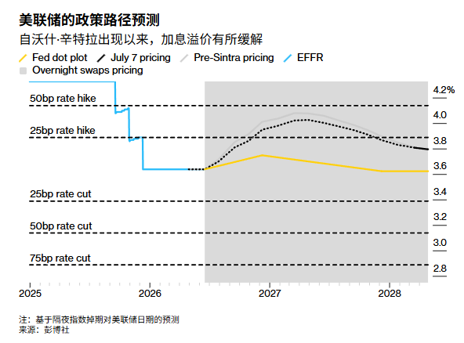
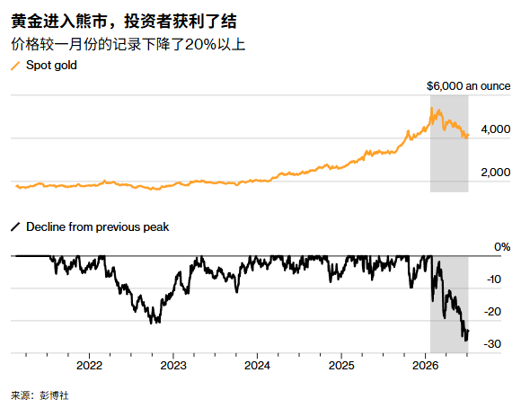
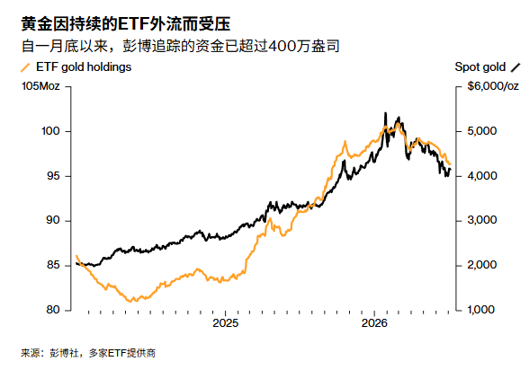
图片要点：
- 图1（美联储政策路径预测）：以隔夜掉期定价的美联储利率路径。7 月 7 日定价（黑虚线）显示 2027 年利率被上修，向"25bp 加息"一线靠拢，明显高于 Fed 点阵图（黄线）；标注"自沃什·辛特拉出现以来，加息溢价有所缓解"。纵轴刻度从 75bp 降息到 50bp 加息。
- 图2（黄金进入熊市）：现货金价格图，2026 年上冲逼近 6000 美元/盎司后回落；下方"距前高回撤"曲线跌破 -20%、逼近 -30%，正式进入熊市（回撤超 20%）。
- 图3（黄金因ETF外流承压）：黑线金价 vs 橙线 ETF 黄金持仓（Moz）。自 2026 年 1 月底以来 ETF 资金流出超 400 万盎司，持仓从约 100Moz 回落，与金价同步走弱。
一句话核心：市场居然开始定价美联储年底"加息"（而非降息），叠加 ETF 资金外流，把靠叙事撑起来的黄金打进了熊市（较高点跌超 20%）。
背景与关键数据
"掉期市场定价加息 32 个基点"是一个重磅反直觉信号——过去两年市场一直赌降息，现在却开始押注加息，说明市场担心通胀韧性或政策转鹰（图1 提到"沃什·辛特拉"应指美联储人事/政策预期的变化）。黄金不生息，利率上行时它的"机会成本"变高（拿着金子不如拿着生息的债），所以加息预期直接利空黄金。金价从近 6000 美元回撤逾 20% 进入熊市，卖压主要来自多头平仓（获利了结）。
图片解读
图1 是理解全帖的钥匙：黑虚线（最新市场定价）明显高于黄线（美联储自己的点阵图预测），说明市场比美联储更"鹰"、开始给加息定价。图2 上半部分是金价的抛物线顶（冲高 6000 后回落），下半部分的回撤曲线是关键——它跌破 -20% 的熊市线、逼近 -30%，用"距前高跌幅"精确定义了"熊市"。图3 则给出资金面证据：ETF 持仓（橙线）和金价（黑线）同步下滑，说明是真金白银在撤离，而非单纯情绪。
为什么重要 / 对市场和经济的含义
黄金是全球流动性和实际利率的温度计。市场从"赌降息"转向"定价加息"，是一个宏观预期的重大转向，会牵动美元、美债、成长股全线。黄金熊市 + ETF 外流，说明避险与抗通胀的叙事阶段性退潮，资金可能回流生息资产。这与帖8"很多资产已被提前定价"、帖7"白酒靠动销不靠故事"共同指向——当利率预期转向，靠叙事定价的资产（黄金、高估值成长）最先承压。
延伸知识
"实际利率"与黄金的跷跷板：黄金价格和"实际利率"（名义利率 - 通胀预期）大体反向。实际利率上行 → 持有黄金的机会成本上升 → 金价承压；反之亦然。所以判断黄金，与其看地缘避险情绪，不如盯住实际利率的方向。这次"加息定价 + 金价熊市"，正是实际利率预期抬升的直接体现。
帖13 · 15:08 · 北约 500 亿军备 + 太平洋试射远程导弹
帖子原文
bloomberg：北约达成协议，在不依赖美国的背景下，投资500亿美元发展武器库，同时，……周一在太平洋试射了一枚远程弹道导弹，从日本到澳大利亚的邻国都感到震惊。
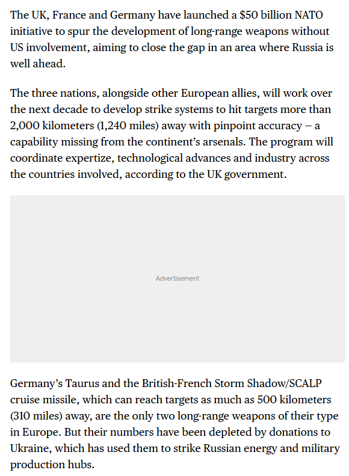
图片要点：Bloomberg 英文报道。英、法、德发起 500 亿美元 NATO 计划，在不依赖美国的情况下发展远程打击武器，未来十年开发能精确打击 2000 公里（1240 英里）外目标的系统——这是欧洲大陆当前缺失的能力。目前欧洲仅有德国 Taurus 和英法 Storm Shadow/SCALP 两款远程武器（射程约 500 公里），且因援乌消耗殆尽。
一句话核心：欧洲要花 500 亿美元、绕开美国自建远程打击能力，同时太平洋出现远程导弹试射，全球军备竞赛在多线升温。
背景与关键数据
这条和帖11 图4 的"NATO 500 亿"是同一事件的展开。核心信息有两层：一是欧洲的"战略自主"——不再依赖美国、自己发展射程 2000 公里的远程武器（现有的 Storm Shadow 才 500 公里且已耗尽）；二是太平洋的导弹试射，暗示印太方向也在紧张。两件事叠加，说明"去美国化的军备扩张"是全球性趋势。
图片解读
这是一张纯英文文字报道截图（中间是广告位）。关键数字是"$50 billion"和"2000 公里射程"，以及"现有 Storm Shadow 仅 500 公里且因援乌耗尽"。它传达的信号是——欧洲的军备缺口很大、补起来要花十年和巨资，国防工业将迎来长期订单。
为什么重要 / 对市场和经济的含义
对产业：欧洲国防工业（导弹、精确制导、航天）迎来结构性扩张，是未来十年的确定性主题之一。对宏观：军费扩张是"财政扩张"的一种，会推高政府债务、也可能形成新的需求拉动（军事凯恩斯主义）。对地缘：欧洲"战略自主"意味着跨大西洋关系松动，全球从"美国主导的单极安全"向"多中心军备"演化。
延伸知识
"军事凯恩斯主义"：政府通过大规模国防开支来刺激经济、创造就业和技术外溢（如互联网、GPS 都源于军事项目）。短期能拉动 GDP，但长期挤占民生支出、推高债务。当下欧洲的 500 亿军备、各国国防预算普遍上调，正是这一逻辑的回归——理解它有助于判断未来财政赤字和相关产业链的走向。
帖14 · 15:12 · 日本财政空间打开，消费再度走强 #其他国家经济#
帖子原文
Paul Cavey：日本的税收/GDP提升，同时意味着其举债空间的增加，这让其在各项资源调配上拥有2020年前不具备的财政空间，5月份的消费活动数据再次强劲。
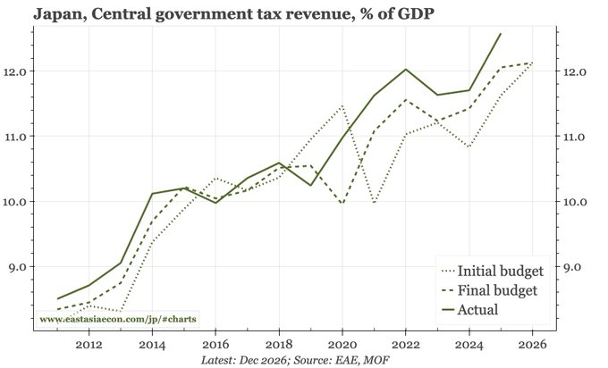
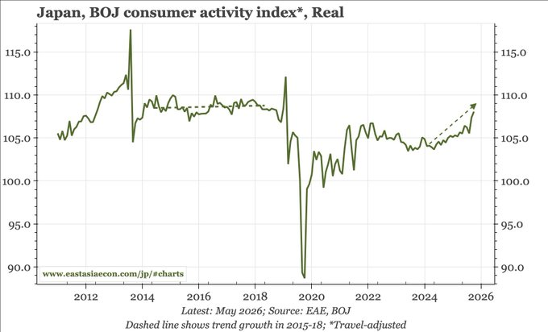
图片要点：
- 图1（日本中央政府税收占 GDP 比重）：三条线（初始预算 Initial、最终预算 Final、实际 Actual）。实际税收/GDP 从 2012 年约 8.5% 稳步上升到 2025–2026 年约 12.5%，且"实际"持续高于"预算"，说明税收超预期。
- 图2（日本 BOJ 消费活动指数，实质）：travel-adjusted 实际消费指数，2020 年疫情深坑（跌到约 89）后修复，2024 年起再度上行、2026 年 5 月冲到约 108–109，虚线箭头指向 2015–18 趋势水平之上。
一句话核心：日本税收占经济比重创新高、财政更宽裕，消费也再度走强，摆脱了过去二十年的紧缩困境。
背景与关键数据
"税收/GDP"上升意味着政府从经济中汲取的财政资源变多，从约 8.5% 升到 12.5% 是一个显著改善，且实际值持续超预算，说明经济名义增长（含通胀）带来了税收红利。税收多了、举债空间也随之扩大（因为偿债能力增强），日本因此获得了"2020 年前没有的财政空间"。同时 5 月消费活动指数走强，形成"财政有余力 + 消费有动能"的正循环。
图片解读
图1 的关键是"实际线（实线）长期高于预算线（虚线）"——政府每年收的税都比年初预算的多，这在通缩多年的日本是罕见的转变，反映名义 GDP 和企业盈利的实质改善。图2 的消费指数在 2020 年砸出深坑后一路修复，2026 年不仅回到疫情前、还突破了 2015–18 的趋势线（虚线箭头），说明日本消费是"真复苏"而非"填坑"。
为什么重要 / 对市场和经济的含义
这为"日本走出通缩、进入温和再通胀"提供了财政与消费的双重证据。财政空间扩大意味着日本政府有能力搞更积极的产业和民生政策；消费走强支撑内需。它也和帖9 的"日股强、日元弱"拼成完整图景：基本面改善支撑日股，但资金对冲机制又压着日元——日本正处在"经济向好、货币偏弱"的独特组合中。
延伸知识
"名义 GDP 增长"对财政的魔力：当经济名义增长（实际增长 + 通胀）加快，税收自动增加、而存量债务是固定名义值，于是"债务/GDP"比率会被稀释、财政自然改善。这就是所谓"用增长化解债务"或"通胀式去杠杆"。日本从"通缩—财政恶化"切换到"温和通胀—财政改善"，正是这一机制的体现，对同样面临高债务的经济体有借鉴意义。
帖15 · 15:17 · 美国低收入工资反弹，削弱"K型经济"叙事 #其他国家经济#
帖子原文
BOFA：通过我们的内部数据看到，6月，美国低收入家庭税后工资增长反弹至 4.1% YoY；高于中等收入家庭的 3.4% YoY；几乎追平高收入家庭的 4.2% YoY；低收入家庭税后工资增速明显改善，短期内削弱了"K型经济"叙事
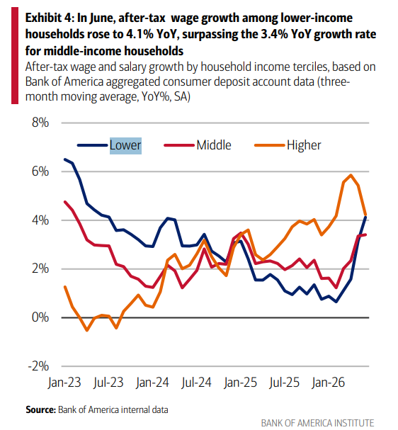
图片要点：美银研究图（Exhibit 4），按家庭收入三档（Lower 低/Middle 中/Higher 高）的税后工资同比增速（三个月移动平均）。2023 年初低收入（深蓝）曾高达 6%+ 后回落到 2025 年约 1% 低点，2026 年初强劲反弹到 4.1%；中等（红）约 3.4%；高收入（橙）先在 2025 年底冲到近 6% 后回落到 4.2%。三条线在 2026 年上半年收敛靠拢。
一句话核心：美国最低收入群体的工资增速突然反弹，追平了高收入群体，暂时打破了"富者愈富、穷者愈穷"的 K 型分化叙事。
背景与关键数据
"K 型经济"指复苏中不同群体走向分化——高收入者（资产、股票受益）向上、低收入者（靠工资）向下，像字母 K 的两条岔开的线。美银用自己的银行账户数据发现：6 月低收入家庭税后工资增速反弹到 4.1%，几乎追平高收入的 4.2%、超过中等的 3.4%。三档收敛意味着底层的工资改善，短期削弱了 K 型分化的说法。
图片解读
这张三线图的关键是"收敛"：2023 年三条线高低分明（低收入深蓝一度最高然后跌到最低），但到 2026 年上半年，深蓝（低收入）从 1% 的低谷急速拉回到约 4%，与橙线（高收入 4.2%）几乎并拢。图表标题直接点明结论——6 月低收入工资增速反超中等收入。视觉上，原本岔开的 K 字尾部重新聚拢。
为什么重要 / 对市场和经济的含义
低收入群体的边际消费倾向最高（挣一块花一块），他们工资改善对消费是强支撑，利好美国内需韧性。但硬币的另一面：底层工资加速上涨也意味着"工资通胀"黏性，可能强化帖12 里"美联储年底或加息"的逻辑——劳动力市场不够松，通胀就难快速回落。所以这条"好消息"（社会分化缓解）对债市可能是"坏消息"（加息压力）。
延伸知识
"边际消费倾向"（MPC）：每多赚 1 元里会花掉多少。低收入者 MPC 接近 1（几乎全花掉），高收入者 MPC 低（更多储蓄/投资）。所以同样的加薪，发给低收入群体对拉动消费的效果远大于发给高收入群体。这也是为什么政策刺激常瞄准低收入端，以及为什么"低收入工资反弹"会同时利好消费、又抬升通胀黏性——理解 MPC 是看懂财政与货币政策传导的基础。
今日全图索引
| 帖号 | 时间 | 主题 | 标签 | 图片文件名 |
|---|---|---|---|---|
| 1 | 14:04 | 消费金融坏账"中年化" | #金融# | post1_img1.png |
| 2 | 14:10 | 餐饮去全职化、灵活用工渗透率68.2% | #经济数据# | post2_img1.png |
| 3 | 14:14 | 城投"债拍"隐形融资、高管被查 | #TAX# | post3_img1.png / post3_img2.png / post3_img3.png |
| 4 | 14:16 | 6月二手房价续跌、上海连涨4月 | #房价# | post4_img1.png / post4_img2.png / post4_img3.png |
| 5 | 14:18 | 挂牌价续跌、租金环比转涨 | #房价# | post5_img1.png |
| 6 | 14:21 | PPI"价涨利不涨"、全年中枢1.8–2.2% | #经济数据# | post6_img1.png / post6_img2.png / post6_img3.png |
| 7 | 14:28 | 白酒从压货转向真实消费去库存 | #经济数据# | post7_img1.png |
| 8 | 14:34 | 工业子行业周期定位、勿"看好就买" | #A股# | post8_img1.png / post8_img2.png |
| 9 | 14:39 | 日股越涨日元越跌的对冲机制 | #金融# | post9_img1.png |
| 10 | 14:43 | "所有人承担损失"（情绪短帖） | — | 无图 |
| 11 | 14:57 | 伊朗霍尔木兹冲突、油价反跌、俄油战前价 | #金融# | post11_img1.png / post11_img2.png / post11_img3.png / post11_img4.png |
| 12 | 15:02 | 市场定价年底加息、黄金进入熊市 | #金融# | post12_img1.png / post12_img2.png / post12_img3.png |
| 13 | 15:08 | 北约500亿军备、太平洋试射导弹 | — | post13_img1.png |
| 14 | 15:12 | 日本税收/GDP升、消费再走强 | #其他国家经济# | post14_img1.png / post14_img2.png |
| 15 | 15:17 | 美国低收入工资反弹、削弱K型叙事 | #其他国家经济# | post15_img1.png |
本报告由自动化任务 jason-zsxq-daily-digest 生成。图片为知识星球原图下载（非截图），正文已以 base64 内嵌，报告为单文件自包含。原图另存于 jason_images/2026-07-07/ 子目录。